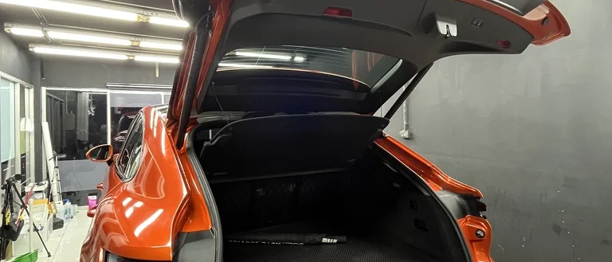
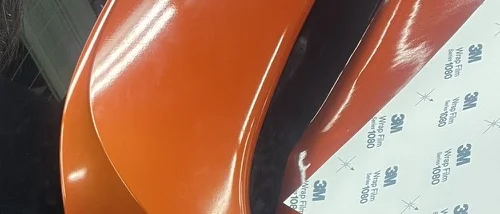

รถไม่ได้ต้องการสีใหม่เสมอไป
บางครั้งรถไม่ได้ต้องการการทำสีใหม่ แต่ต้องการ “บุคลิกใหม่”
Wrap Film คือการออกแบบพื้นผิวใหม่ โดยไม่แตะต้องสีเดิมของรถ
เมื่อถึงเวลาที่ต้องการกลับสภาพเดิม สามารถถอดออกได้โดยไม่กระทบสีโรงงาน

Wrap ทำอะไรได้จริง
| คุณสมบัติ | ทำได้ | ไม่ได้ |
|---|---|---|
| เปลี่ยนสีรถโดยไม่พ่นสี | ✓ | |
| ปกป้องสีเดิมระดับพื้นฐาน | ✓ | |
| ถอดกลับสภาพเดิมได้ | ✓ | |
| กันหินดีดระดับ PPF | ✗ | |
| แก้ไขรอยลึกบนสีเดิม | ✗ |
Wrap คือการเปลี่ยนพื้นผิว ไม่ใช่การเพิ่มเกราะป้องกันระดับสูง
Wrap Program Structure
WRP1 — Accent
หลังคา / กระจกมองข้าง / ชิ้นส่วนบางจุด เพิ่มรายละเอียดโดยไม่เปลี่ยนทั้งคัน
WRP2 — Partial Wrap
เปลี่ยนบางส่วนของตัวรถ เช่น Two-Tone หรือครึ่งคัน
WRP3 — Full Wrap
เปลี่ยนบุคลิกทั้งคัน ออกแบบ Character ใหม่ทั้งหมด
Controlled Installation System
Surface Preparation Edge Tension Control Seam Alignment Heat & Memory Reset

Wrap เชื่อมกับระบบอื่นอย่างไร
ก่อน Wrap ควรผ่านขั้นตอน Wash และ Correction เพื่อให้พื้นผิวสะอาดและเรียบที่สุด
บางพื้นที่สามารถติด PPF เสริม เพื่อเพิ่มการปกป้องเฉพาะจุดได้